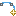
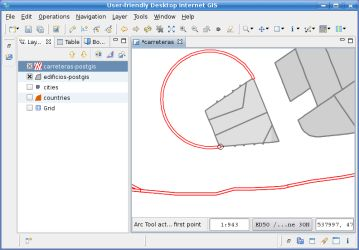

Arku tresna
 Hiru kontrol puntu emanez (hasiera puntua, ardatza eta amaiera puntua), arkua ematen duen LineString bat sortzen du.
Arku tresnarekin Feature bat sortu daiteke zeinen geometria arku baten zirkunferentziaren hurrerapen lineala den, elkarren segidako arkuzko bi soka definitzen dituzten 3 puntu zehaztuz.
Portaera
Arku tresna Featureak sortzeko tresna bat da eta une honetan aukeratutako geruzan jarduten du, beraz aukeratutako geruzak LineString motako geometriak sortzen utzi behar du, bai feature motak LineString edo MultiLineString bezala zehaztu.
Arku tresnak Feature berria sortzen doanean, ez ditu aldaketak gordetzen, erabiltzaileari eragiketa desegiten, Featurearen ezaugarrien balioak ezartzen edo normalean uDig-en egiten den bezala, aldaketak gordetzen utziz.
Ikusten dena gordetzen da
Ikusten dena gordetzen dela zaintzearen helburuarekin, eta ondorioz erabiltzaileak burutzen dituen ekintzekin bat izatea, Arku tresnarekin sorturiko geometria lehenbizi maparen CRS-an sortua izango da, eta gero barreneko CRS-ari proiektatua izango da gordetzeko. Honek erabiltzaileari nahi duen CRS-an arkua sortzen uzten dio, maparen CRS-a beraren asmoen kideko bezala ezarriz. Datuak eta maparen CRS-ak desberdinak badira, geometria maparen CRS-an zirkunferentzi arku bat izango dela baina seguraski ez dela izango datuen CRS-an, ondorio bat izango da.
Erabilera
1 irudian agertzen den bezala, Arku tresna erabiltzen hasteko lehenbizi uDig-en argitalpen tresen barran hedaturiko menutik aukeratu behar duzu.

1 irudia. Aukeratu Arku tresna
Tresna aukeratua denean, arkua definitzen duten 3 puntu zehaztu behar dira. Hiru puntuetariko edozeinentzat smap-aren azalera erabili dezakezu, aktibatua bada, beste Feature baten erpin hurbilena berez aukeratzeko helburuarekin.

2 irudia. Kontrol puntuak zehaztu
Klik bakar batekin, hirugarren puntua zehaztu eta Featurea arku geometria batekin 3 irudian agertzen den bezala sortuko da. Emaitzako geometria benetako arkuaren LineString hurbildu bat izango da.

3 irudia. Hirugarren puntua zehaztu ondoren sorturiko arkua
(c) Copyright (c) 2004-2008 Refractions Research Inc. and others.